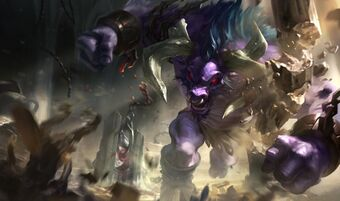
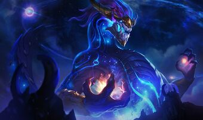

Aatrox
Alguna vez Honorables Defensores de shurima contra el vacio, Aatrox y sus hermanos
se convertirian con el tiempo en una mayor amenaza para Runaterra
Ahri
Conectada de manera natural a la magia del reino espiritual, Ahri es una misteriosa
vastaya vulpina que busca su lugar en el mundo. tras haberse convertido en una predadora mortal.

Akali
Tras renunciar a la orden Kinkou y a su titulo como el puño de la sombra
akali pelea sola, lista para ser el arma letal que su pueblo necesita. siendo un leal ninja desde pequeña
Akshan
El arma de Akshan, Redentora, es un Arma Reliquia de Luz con un propiedades de "reversión de la muerte" para personas asesinadas matando a su perpetrador.

Alistar
Alistar fue traicionado por su propia especie después de que su clan no estuviera de acuerdo en unirse a Noxus como los clanes más grandes, dejándolo como el único superviviente.
Alistar y Xin Zhao Xin Zhao habían sido capturados por Noxus y forzados a participar en la Carnaza.
Anivia
Gregor dice que "recuerda el sacrificio de Anivia", lo cual podría significar que murió durante el levantamiento de los Hijos del Hielo en el Abismo de los Lamentos.
De todos los semidioses freljordianos, Ashe Ashe tiene la conexión más profunda con Anivia debido a sus valores de paz.
Annie
En el lore actual de Annie: el epíteto de Gregori se acorta a "el Gris" y el de Amoline a "una bruja".
Tibbers fue hecho a mano por la madre de Annie, con los míticos Osos Sombríos como plantilla, y es el único recuerdo que tiene de ella. siendo annie uno de los mid favoritos actuamlente
Ashe
Sin el conocimiento de todos, Lissandra es la Bruja de Hielo de la leyenda Freljordiana, que en realidad está esperando el momento adecuado para atacar a las tribus de Ashe y Sejuani y eliminar cualquier encarnación potencial de Avarosa y Serylda para tomar el Fréljord.

Aurelion Sol
Aurelion Sol es un ser cósmico capaz de crear y destruir estrellas con solo mover los dedos.
Cuando Aurelion Sol muere, se disipa en una constelación de dragón. Se desconoce si esto tiene o no importancia para los dragones celestiales.
Azir
cuando su antigua alma gemela traicionóo su confianza para convertirse en un ser Ascendido y destruyendo a Shurima en el proceso.
Y, sin embargo, Azir no admitirá que su ambición puede haberlo llevado por mal camino para empezar.

Bardo
A pesar de ser seres celestiales, El Bardo no está restringido al plano de origen de Soraka Soraka, sino que existe y viaja a través de muchos. [21]
El Bardo podría haber notado que Ekko y Zilean alteran la línea de tiempo.
Blitzcrank
solía ejecutar un servicio de citas llamado ' compatibilidad. Determinaba la probabilidad de una pareja exitosa por medio de un algoritmo que ideó.
El lore de Blitzcrank se basa aparentemente en The Bicentennial Man de Isaac Asimov.